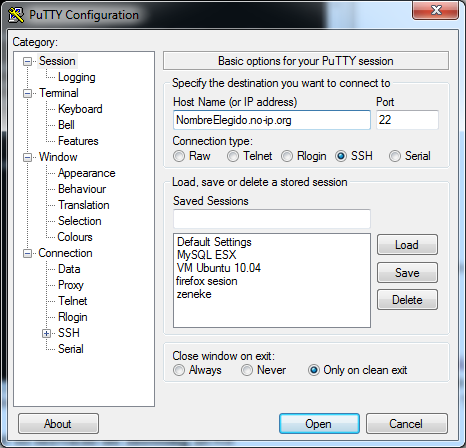
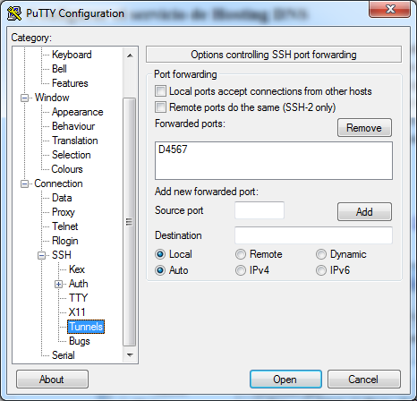
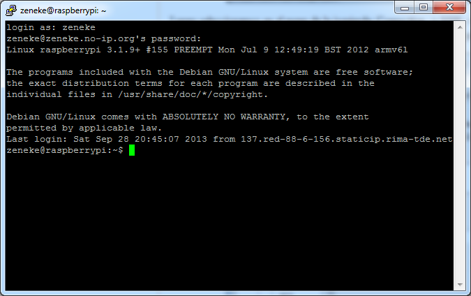
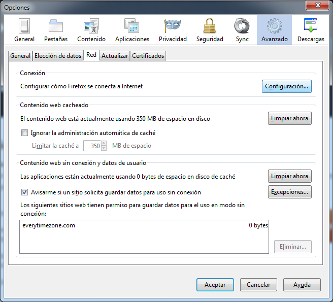
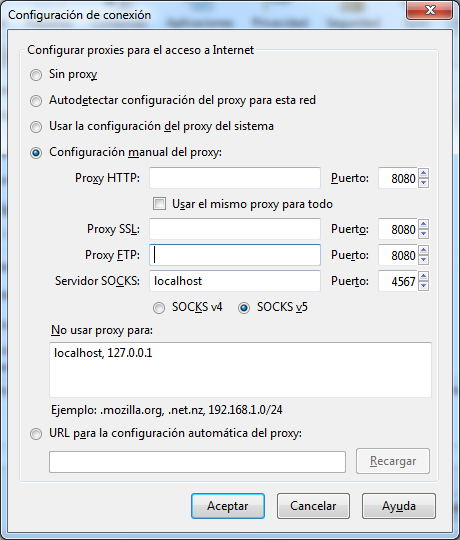

Navegar con Firefox a traves del ADSL de casa utilizando la RPi
Requisitos
Pasos
- Configurar el router
- Configurar el servidor SSH de la Raspberry
- Configurar el servicio de Hosting DNS
- Configurar el PC desde el que queremos navegar de manera segura
Configurar el router
En esta guia no vamos a especificar todos los pasos a seguir. Lo importante a saber es que hay que redirigir en el Router el puerto 22, hacia la IP (local) fija de nuestra RPi
Configurar el servidor SSH de la RPi
Podemos utilizar la guia original a traves de este enlace Para comprobar primero si tenemos el puerto 22 abierto, utilizamos esta web: yougetsignal.com Donde pone Remote Adress, pondremos nuestra IP publica (si lo estamos haciendo desde casa, debe ser la que viene por defecto). En port Number, ponemos 22. Le damos a check y debe aparecer un mensahe que pone "Port 80 is open on IP"
Configurar el servicio de Hosting DNS
Vamos a utilizar los servicios de no-ip.com, aunque tambien podemos utilizar dynDNS Primero nos registramos en la web, una vez registrados, accedemos con nuestro usuario. Le damos a "Add a host", ponemos un Hostname (que sera el nombre que utilizaremos siempre que queramos acceder desde fuera a nuestra RPi), en escogemos cualquier tipo de dominio de los gratuitos, por ejemplo "no-ip.org". A partir de ahora siempre que queramos acceder a la Rpi pondremos el nombre: NombreElegido.no-ip.org Ahora nos podemos descargar el cliente, en nuestro equipo local de casa para que cuando cambien nuestra IP, se actualice automaticamente: Enlace de descarga
Configurar el PC desde el que queremos navegar
Lo primero que hacemos es bajarnos el programa Putty para windows: Descarga Lo arrancamos y configuramos la pantalla inicial de la siguiente manera:
{kind=link}
Luego seleccionamos en el menu de la izquierda: Connection -> SSH -> Tunnels Y configuramos en la parte de "Forwarded ports", eligiendo un puerto por ejemplo el 4567, poniendo delante la letra D.
{kind=link}
Y ya esta terminada la configuracion del putty, para no perderla volvemos a seleccionar en el menu de la izquierda: Session Elegimos un nombre en Saved Sessions y pulsamos Save. De esta manera ya tenemos los datos guardados. Ahora solo le damos a open y si hemos seguido todos los pasos anteriores adecuadamente, nos saldra la siguiente pantalla, donde pondremos el usuario y clave de la Raspberry.
{kind=link}
Ahora configuramos Firefox para que navege mediante el puerto 4567 Le damos al boton de Firefox (esquina arriba izda)-> Opciones -> Opciones En la pantalla de opciones seleccionamos: Avanzado -> pestaña Red -> Conexion -> boton Configuracion
{kind=link}
En la pantalla de Configuracion de la conexion, seleccionamos "Configuracion manual del proxy" En servidor SOCKS ponemos: localhost. Puerto: 4567 Seleccionamos SOCKS v5 En no usar proxy para ponemos por si acaso: localhost, 1270.0.0.1 Y le damos a aceptar
{kind=link}
Si todo ha ido bien, a partir de este momento estaremos navegando a traves del ADSL de casa, y de manera segura (es decir no nos pueden bloquear por ejemplo el acceso a youtube, o a algunas webs, ademas de que en principio no pueden saber donde hemos estado navegando). Para hacer una prueba podemos poner la IP de nuestro router, y nos deberia salir la pagina de configuracion.